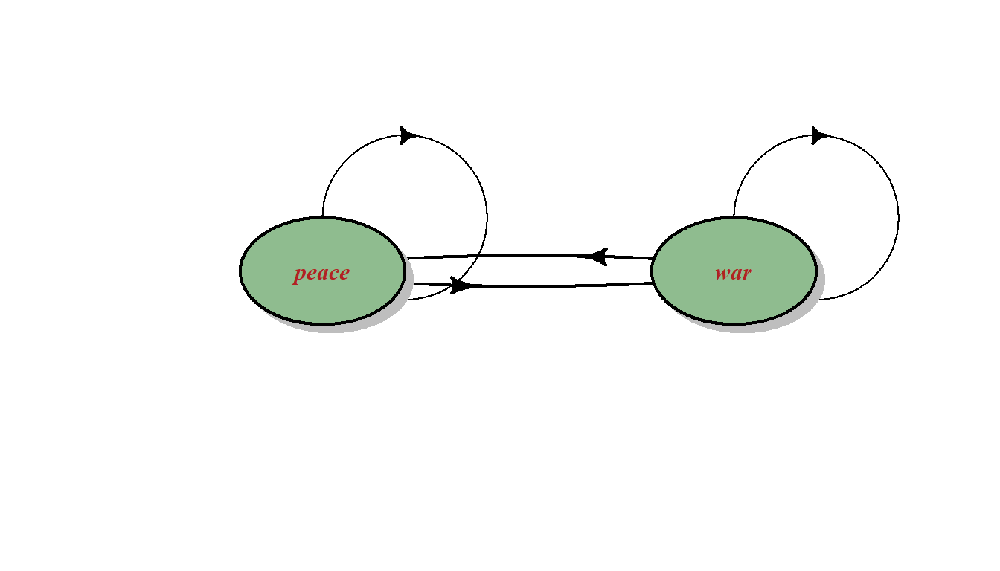
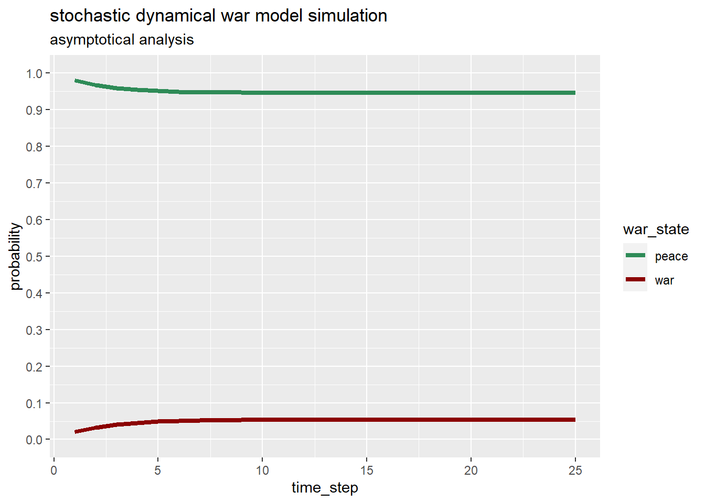
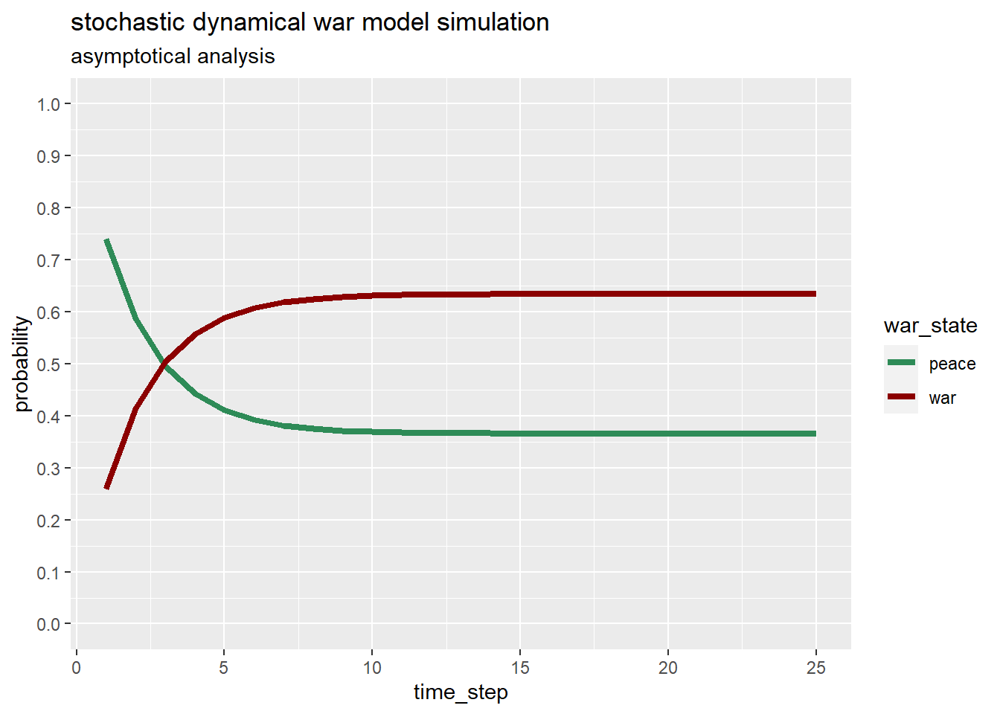
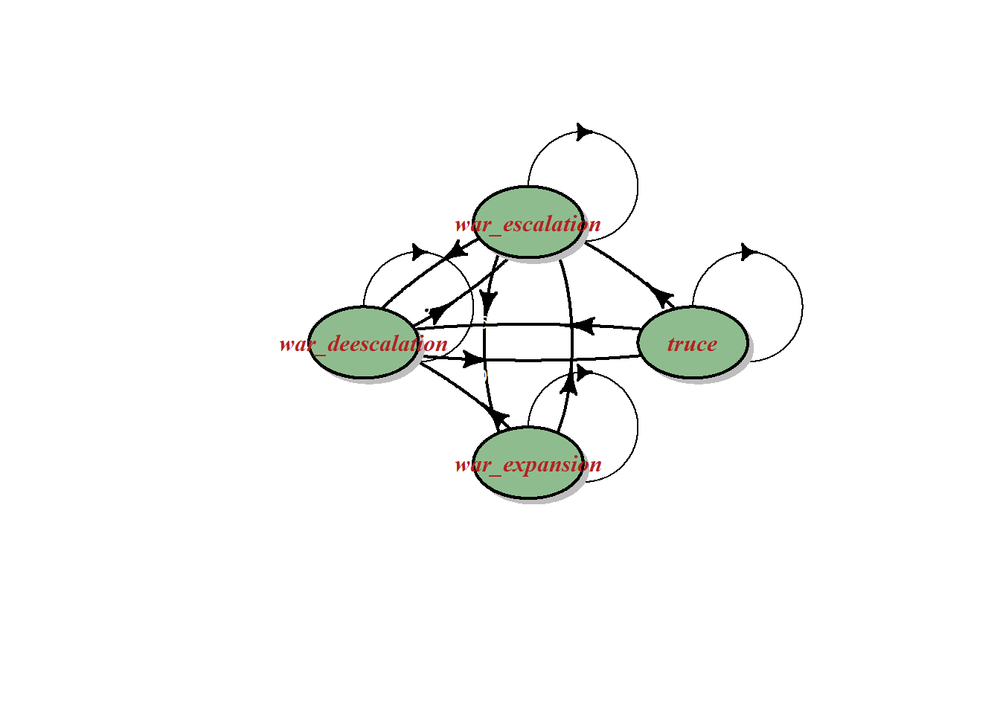
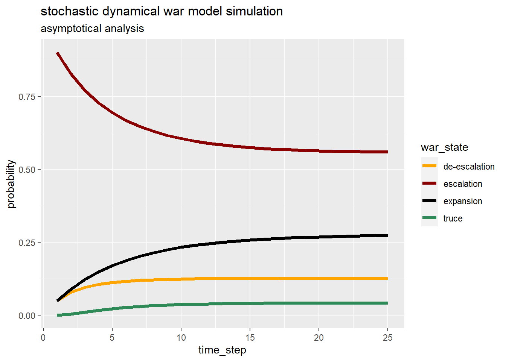

3 Markovian War
“Only the dead have seen the end of war.”
Plato
The previous chapter focused on approaching warfare in terms of strategy by applying game theory, this chapter introduces an approach based on probabilities and stochastic processes.
To underline the importance of considering uncertainty Voltaire said: “Doubt is not a pleasant condition, but certainty is absurd.”
In a world where every moment is determined by an infinitely complex set of factors, probabilistic thinking helps identify the most probable outcomes and thus improve the accuracy and effectiveness of decisions.
Since warfare involves events that unfold over time, process-based probabilistic models are better suited for thinking about warfare. Stochastic processes can be defined as any process that describes the evolution of a random phenomenon over time or, more precisely, as any sequence of states in which the transitions through these states at any stage depend on chance.
In the remainder of this chapter, Markov chains will be used to model and analyze both the probabilities of a nation going to war and the probabilities of how the war itself could evolve.
3.1 markov chains
A Markov process is a stochastic process in which:
the set of possible states is finite;
the transition probability in a state depends only on the present state: this is the so-called Markov property which states that “the future is independent from the past given the present”;
the transition probabilities are constant over time.
From a mathematical point of view, Markov chain theory is a clever combination of probability theory and linear algebra that is used to model a real-world system that is in discrete states, but it is not entirely clear how has evolved.
Thus the real-world system is modeled as a sequence of states that over time moves between states with a specific probability. Since the states are connected to each other, they form a chain.
Markov chains are used in a variety of situations because they can be designed to model many real-world processes. These areas range from animal population mapping to search engine algorithms, music composition and speech recognition.
Markov chains are exhaustively defined by a set of states and a transition probability matrix between them. If the Markov chain has \(n\) possible states, the matrix will be a square matrix \(n \cdot n\), such that the element \((i, j)\) is the transition probability from state \(i\) to state \(j\).
Also, the transition matrix must be a stochastic matrix, one whose entries in each row must sum to exactly 1. Similarly if the Markov chain is represented by drawing a transition state diagram, the probabilities of the transition arrows coming out from a node, or state, add up to one.
To initialize a Markov chain an initial state vector \(n \cdot 1\) is defined in order to describe the starting probability distribution for each of the possible \(n\) states. The \(i\) entry of the vector describes the probability that the chain starts at state \(i\).
To obtain the multi-step transition probability, the one-step transition matrix is multiplied by itself by the number of necessary transitions. In other words, the transition probability of arriving at state \(j\) from state \(i\) after \(n\) steps is indicated by the position \(i,j\) of the transition matrix to the nth power.
The stationary distribution represents the distribution of states for a long-term Markov process i.e. as the number of steps or transitions increases. A stationary distribution of a Markov chain is a probability distribution that remains unchanged after some transition period. Typically, it is represented as a row vector \(π\) whose entries are probabilities that add to 1, and given the transition matrix \(P\), it satisfies \(π=π \cdot P\). The stationary distribution provides information on the stability of the random process and, in some cases, describes the limiting behavior of the Markov chain.
Andrey Markov, the Russian mathematician who first studied this type of stochastic process, was able to prove that, as long as all states in the chain can be reached (irreducibility), the probability to be in a particular state will converge to a single constant value in the long run.
3.2 will there be war?
A nation can enjoy a long period of peace or face war depending on many factors including its geopolitical position, its alliances and the presence on its territory of goods of interest to other countries. It has been seen in history that the transition from peace to war can be triggered by a sudden and uncontrollable conflict or have deep roots, while the transition from war to peace is usually long and difficult but there is always an opportunity for peace as well.
3.2.1 markov chain model
This real world situation can be modeled with a markov chain process with only two states:
peace, in this state the modeled nation is in peace with other countries;
war, on the contrary in this state nation is fighting with other countries.
The hypothetical nation, if in a peaceful state, can remain in peace or can go to war and while in war can keep on fighting or make peace. The state transition diagram representing the markov chain model is displayed below.

Such a Markov chain in which every state can be reached from every other state is said to be strongly connected or irreducible, and such a structure is the condition for the existence of a unique stationary distribution.
To complete the Markov chain model it is necessary to define the transition probability matrix. Two different situations are considered:
a peaceful nation;
a nation at risk of war.
3.2.2 a peaceful nation
Suppose the hypothetical nation is in a peaceful area where neighboring nations are also peaceful, it has good international relations with every country and no history of recent conflicts. In such a situation the probability of remaining in a peaceful state could be 0.98, and then going to war could be only 0.02. In war the probability of continuing to fight could be 0.65 and then achieving peace the probability should go up to 0.35. Note that the transition probabilities have been assigned completely arbitrarily for demonstration purpose only. The probability transition matrix below describes this model.
to |
||
|---|---|---|
| peace | war | |
| from | ||
| peace | 0.98 | 0.02 |
| war | 0.35 | 0.65 |
Starting from a peace state, initial state vector with probability 1 of peace and probability 0 of war, the chances will evolve following the graph below.

In this case probabilities to enter war increase very slightly reaching the stationary distribution represented as in the table below.
| peace | war | |
|---|---|---|
| steady state probabilities | 0.9459459 | 0.0540541 |
A hypothetical peaceful nation maintains high probabilities of being at peace within a strongly connected two-state Markov chain model. Yet over time the probability of being in a peaceful state has decreased somewhat.
3.2.3 a nation at risk of war
The model presented in this section assumes that the hypothetical nation is in a turbulent area where some neighboring nations are at war, it has a difficult international relationship with some neighboring countries and a history of recent conflicts. In such a situation the probability of remaining in a peaceful state could be 0.74, and therefore the probability of going to war could be 0.26, In war the probability of continuing to fight could be 0.85 and therefore the probability of achieving peace should be 0.15. Note that, also in this case, the transition probabilities have been assigned completely arbitrarily for demonstration purpose only. The probability transition matrix below describes this model.
to |
||
|---|---|---|
| peace | war | |
| from | ||
| peace | 0.74 | 0.26 |
| war | 0.15 | 0.85 |
Starting from a peace state the probabilities will evolve following the graph below.

After only three time steps, say years, the hypothetical nation would have same probability to find itself in war or in peace. And then war probabilities continue to increase reaching the stationary distribution represented as in the table below.
| peace | war | |
|---|---|---|
| steady state probabilities | 0.3658537 | 0.6341463 |
In the long run a hypothetical nation at risk of war will see the odds of being at war increase a lot considering a fully connected two-states Markov chain.
3.3 will there be peace again?
In this section, war itself and its possible states in the course of its evolution are modeled.
In a certain period war can be harsh and require a high cost in terms of human lives, civilians and soldiers, and of military and economic resources. Later the situation can become even more difficult both because the war can be extended to other countries and because unconventional weapons can be used. It is possible, on the contrary, that the war enters a state of greater calm in which the fighting subsides. This de-escalation phase can then eventually lead to the initiation of peace talks between enemies and the establishment of truces on battlefronts.
3.3.1 markov chain model
This war evolution can be modeled as a markov chain with only four states:
war escalation meaning more arms, more battles, more destruction and casualties;
war de-escalation meaning, on the contrary, no new arms, less battles, less destruction and casualties;
truce means truce on battlefronts, peace talks and possibly a ceasefire agreement;
war expansion meaning that other nations enters directly in fights leading to a potential regional or world war and / or that opponents starts using non conventional weapons including chemical, biological or nuclear weapons.
The war can evolve in almost any direction excluding going:
from war escalation state directly to a truce phase;
from war de escalation state directly to war expansion;
from war expansion state directly to a truce phase;
from truce state directly to war expansion.
However, the chain remains irreducible since from any state it is possible to reach any other state even if not necessarily in one step.
The following state transition diagram fully describes the Markov chain.

3.3.2 a war evolving situation
The situation to be modeled relates to a war in a turbulent region where the enemies have strong alliances. and are determined to achieve their goals through warfare. In this condition the transition probabilities could be represented by the following transition probability matrix.
to |
||||
|---|---|---|---|---|
| escalation | de-escalation | truce | expansion | |
| from | ||||
| escalation | 0.90 | 0.05 | 0.0 | 0.05 |
| de-escalation | 0.25 | 0.65 | 0.1 | 0.00 |
| truce | 0.05 | 0.25 | 0.7 | 0.00 |
| expansion | 0.08 | 0.02 | 0.0 | 0.90 |
If the war is in a state of escalation, it has a 0.90 chance of remaining in this state and only a 0.05 chance of reducing or expanding the war. On the other hand, there is no possibility of entering a state of truce. If the war is in a state of escalation, the odds are 0.65 of remaining in this state, 0.25 of entering a state of escalation of war, and 0.10 of initiating a state of truce. Starting from a state of truce it is not possible to move to a war expansion while the probability of remaining in a truce is 0.70, the probability of entering a state of de-escalation is 0.25 and of moving to a state of escalation is 0.05. If the war is expanding, it cannot go into truce but escalate with probability 0.08 or de-escalate with probability 0.02. Note that, as with previous models, the transition probabilities have been assigned completely arbitrarily for demonstration purposes only.
The following graph shows the probabilities evolution computed with linear algebra.

After 25 steps, say months, war probabilities are very stable and near the stationary distribution represented as in the table below.
| escalation | de-escalation | truce | expansion | |
|---|---|---|---|---|
| steady state probabilities | 0.56 | 0.12 | 0.04 | 0.28 |
In the long run given the constant probability transition matrix for the modeled situation, be in a war escalation state has still the greater probability. The second probable state is war expansion. Truce reach no more than 0.05 probability.
3.4 key takeways
Reasoning about war using a Markov chain helps to understand the stochastic process, i.e. how probabilities evolve.
The Markov chain models described above, although simple and subject to Markov limitations (being memoryless and having transition probabilities constant of one step), show that in a connected chain the probabilities of being in a state do not remain constant over time until they reach their stationary distribution.
In both models presented, the chances of things getting even worse increase over time. This is not that relevant as the models have been set up completely fictitiously.
The point to underline is that it is not enough to estimate the probabilities at a given moment, but to understand how the probabilities of being in a given state evolve over time.
In order to learn how to compute linear algebra in R, please read Mario De De Toma (2020).
For this chapter the following R packages have been used:
tibble by Müller and Wickham (2023), dplyr by Wickham et al. (2023) and tidyr by Wickham, Vaughan, and Girlich (2023) for data manipulation;
diagram by Karlin Soetaert (2020) for graphing the state transition diagrams;
kableExtra by Hao Zhu (2021) for visualizing tables;
ggplot2 by Hadley Wickham (2016) for plotting the time evolution of the probabilities.